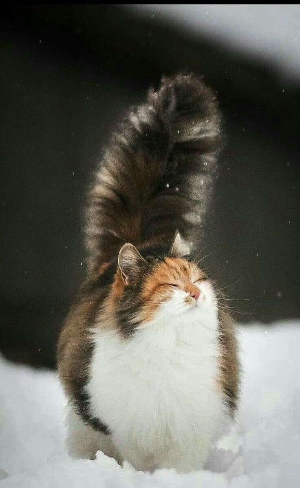
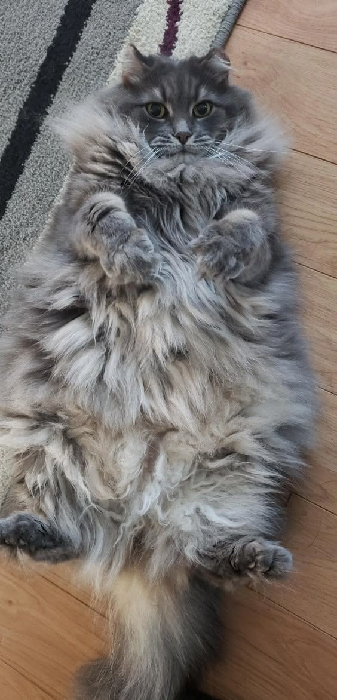
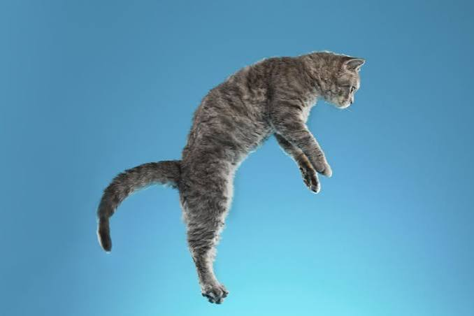

Очі
Вертикальна зіниця змінюється від тонкої щілини до кола й допомагає бачити в сутінках набагато краще за людину.
Коти живуть поруч із людьми майже десять тисяч років і досі залишаються загадкою. Давайте роздивимося їх уважніше.
Дивитися фото Читати факти
Кожна деталь у кішки створена природою одночасно для полювання та елегантності.
Вертикальна зіниця змінюється від тонкої щілини до кола й допомагає бачити в сутінках набагато краще за людину.

Від оксамитової короткої до шовковистої довгої. Забарвлень і візерунків тут більше, ніж у будь-якої іншої домашньої тварини.

Кішка стрибає на висоту, що в п'ять-шість разів перевищує її зріст, і майже завжди приземляється на лапи.
кісточок у скелеті дорослої кішки
на добу коти проводять уві сні
різних звуків уміє видавати кішка
років триває дружба котів і людей
Натисніть кнопку, щоб дізнатися щось несподіване про котів.
Дізнайтеся про найкрасивіші породи або відкрийте для себе факти, у які важко повірити.